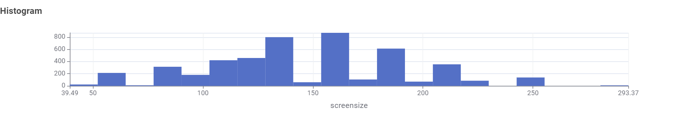
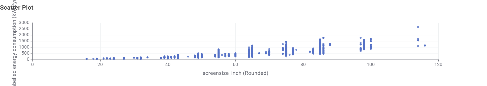
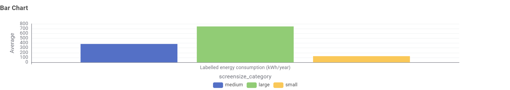
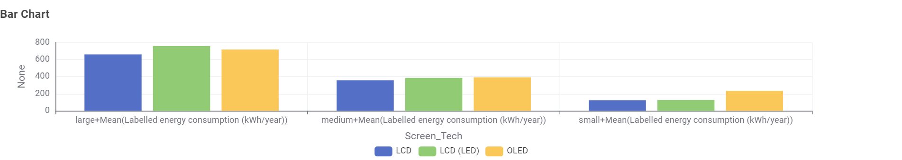

Choosing an Energy-Efficient TV
Data Story
This page is designed for consumers who are planning to buy a new television. It uses the TV energy consumption dataset to explore how screen size and screen technology affect electricity use.
Audience
The target audience is household consumers who want to choose a TV that balances screen size, picture quality, and energy efficiency.
Key Questions
- What TV sizes are most common?
- Do larger TVs use more energy?
- Does screen technology affect energy consumption?
Distribution of TV Sizes

This visualisation shows the distribution of TV sizes in the dataset. It helps consumers understand what screen sizes are most common.
Screen Size vs Energy Consumption

This visualisation shows the relationship between screen size and energy consumption. Larger TVs generally appear to use more energy.
Energy Consumption by Size Category

This chart compares small, medium, and large TVs. It shows that larger size categories tend to have higher energy consumption.
Screen Technology and Energy Use

This chart compares energy use across different screen technologies. It shows that energy consumption may vary depending on the display type.
Main Insight
The most important finding is that TV size has the biggest impact on energy consumption. Larger TVs consistently use more electricity, meaning consumers can reduce energy costs by choosing a smaller or more efficient model.
Conclusion
Overall, the data suggests that TV size is an important factor in energy consumption. Consumers who want to reduce electricity use should compare both screen size and screen technology before purchasing a TV.